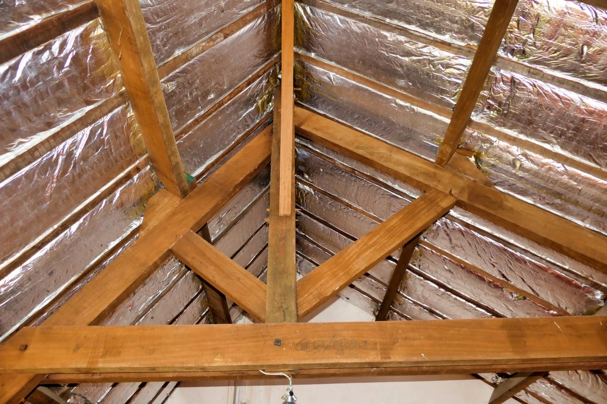
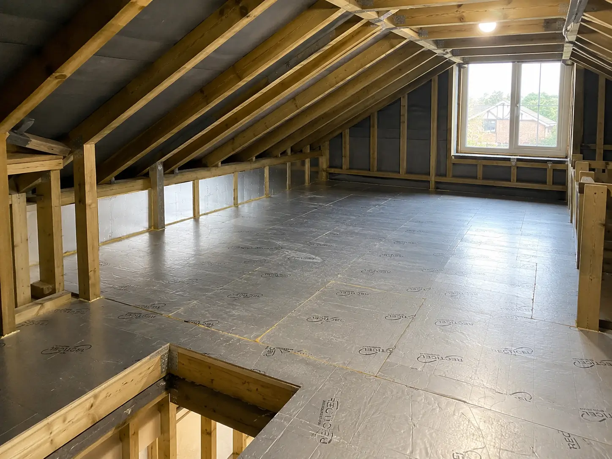

High-Performance Loft Insulation Boards for Maximum Thermal Efficiency
Space-Saving • Precision Installed • Long-Term Performance
Here at Brentwood Insulation Installers We install high performing Rigid PIR boards in lofts in Brentwood.
Rigid PIR insulation boards are high-performance foam insulation panels faced with aluminium foil on both sides. Unlike mineral wool loft roll, PIR boards deliver significantly higher thermal resistance per thickness, meaning strong insulation performance without needing large depth.
This makes rigid PIR insulation particularly suitable for Brentwood properties where loft headroom is limited or a more engineered insulation solution is required.
PIR insulation is not just “foil insulation” — it is a solid rigid board system that must be cut and fitted precisely to make sure it performs correctly.
Rigid PIR loft insulation is ideal for homeowners who:
It may not be necessary for standard cold lofts where adequate depth for mineral wool exists. In those cases, traditional insulation can be more cost-effective.
Our role is to assess your loft layout and recommend whether rigid PIR insulation genuinely benefits your property or whether a simpler solution performs just as well.
You can see our full overview of our loft insulation services on our homepage here: Brentwood loft insulation service overview

PIR insulation boards must be measured and cut accurately to fit tightly between rafters or joists. Gaps reduce performance and can lead to thermal bridging.
As Brentwood rigid PIR insulation specialists, we focus on:
Proper installation ensures the board performs to it's rated thermal specification long-term.
One of the key advantages of rigid PIR insulation in Brentwood lofts is it's high insulation value per millimetre of thickness. This makes it a strong option in tighter roof structures where every inch of headroom matters.
When installed correctly, PIR boards:
Performance depends heavily on correct fitting and ventilation design, not just the board itself.
When installing rigid PIR insulation in Brentwood properties, thermal performance isn’t just about comfort — it also relates to Building Regulations compliance, particularly during loft conversions or major roof upgrades.
In the UK, roof insulation must meet specific U-value targets depending on whether the space is a cold loft, warm roof, or habitable loft conversion. U-value measures how much heat passes through a structure — the lower the number, the better the insulation performance.
Rigid PIR boards are frequently used in warm roof systems because they achieve strong thermal resistance without excessive thickness. This makes them particularly useful where rafter depth is limited.
However, compliance isn’t just about board thickness. It’s about correct installation, ventilation planning, vapour control, and structural layout. Installing PIR incorrectly can reduce performance and create moisture risks.
For Brentwood homeowners planning a loft conversion or upgrading roof insulation, we assess the existing structure and recommend a setup that aligns with current standards while maintaining long-term performance.
Rigid PIR boards are high-performance products — but only when installed correctly. Poor fitting or incorrect detailing can significantly reduce their effectiveness and create long-term issues within the roof structure.
Some of the most common mistakes we see in Brentwood lofts include:
PIR insulation is not a “cut and drop” product. It requires careful measuring, clean cutting, proper spacing, and attention to airflow strategy.
When installed properly, rigid PIR insulation delivers excellent long-term performance. When installed poorly, it can create cold bridging, trapped moisture, and disappointing energy savings.
That’s why we assess the loft layout, rafter depth, and ventilation setup before recommending a board thickness or installation method — ensuring your Brentwood property benefits from the performance PIR insulation is designed to provide.
No two lofts are exactly the same. Across Brentwood we regularly work on everything from older timber roof structures to newer properties with tighter rafter layouts, and the insulation approach often changes accordingly.
Some roofs allow PIR boards to be installed neatly between rafters, while others benefit from a combination of between-rafter and under-rafter insulation to achieve the required thermal performance. The available depth, roof design and intended use of the loft all influence the final specification.
Before recommending any rigid PIR insulation installation, we assess the existing roof construction so the boards work with the structure rather than against it.
A successful PIR installation starts before the first board is cut. We often find stored items, older insulation materials, unused boarding or previous alterations that need reviewing before installation begins.
Clearing working areas allows accurate measuring and helps identify anything that could affect board fitting later in the project. In some Brentwood lofts, electrical cables, pipework or existing roof upgrades need to be factored into the installation plan from the outset.
Taking the time to assess these details early usually results in a cleaner installation, better board continuity and a more predictable outcome once the loft is fully insulated.
Not all PIR boards are identical. Different manufacturers produce boards with varying thicknesses, facing materials and performance ratings, and selecting the correct product depends on the loft design rather than simply choosing the thickest board available.
For many Brentwood properties, the goal is balancing thermal performance with available space. We look at the roof construction first, then recommend a board specification that suits the project requirements and intended use of the loft space.
This practical approach helps avoid unnecessary cost while still achieving strong long-term insulation performance.
We carry out rigid PIR insulation installation across Brentwood and surrounding areas for homeowners looking to improve roof insulation performance without sacrificing valuable loft space.
Whether the project involves a standard loft upgrade, preparation for future renovation work or improving insulation within an existing roof structure, we assess the layout, discuss the available options and provide practical recommendations based on the property itself.
If you're considering rigid PIR loft insulation in Brentwood and want straightforward advice on suitability, board thickness or installation options, you're welcome to call and discuss the project before arranging a quotation.
PIR offers higher thermal performance per thickness, making it suitable where space is limited. Mineral wool remains effective for standard loft floors with sufficient depth. The best choice depends on loft structure and usage.
Thickness varies depending on target thermal performance and installation location. Common board depths range between 50mm and 120mm, but this should be assessed based on your roof construction.
When installed without proper ventilation planning, any insulation system can contribute to moisture issues. Correct airflow design and vapour control layers prevent condensation build-up.
Yes. PIR boards are commonly used between rafters in loft conversions due to their high insulation value and slim profile.
Costs vary depending on loft size, board thickness and installation complexity. PIR is generally more expensive than mineral wool due to material cost and precision fitting requirements. We provide clear assessments based on your property layout.